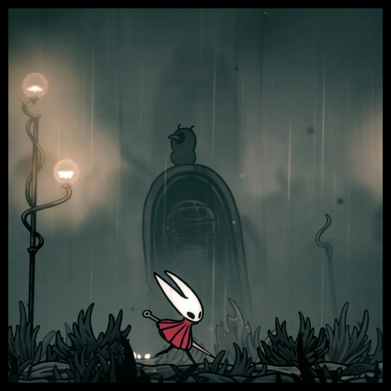
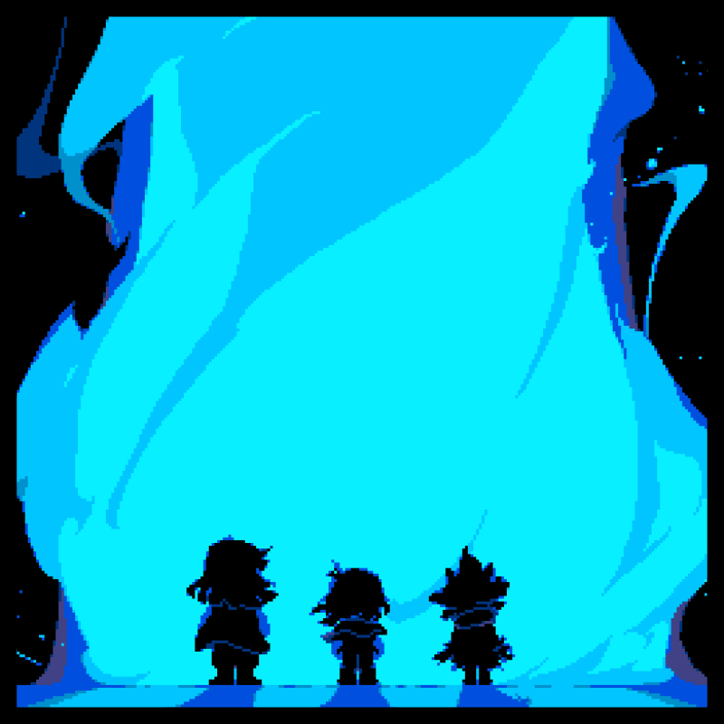
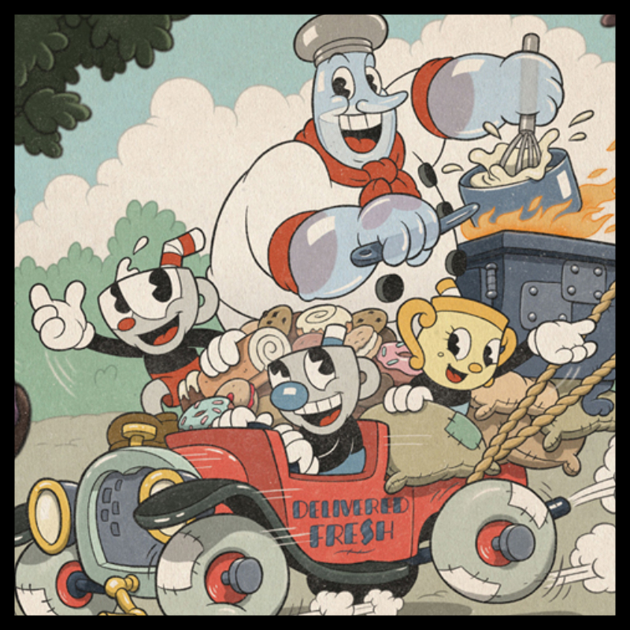

A desenvolvedora Team Cherry anunciou uma atualização para Hollow Knight: Silksong
que reduz a dificuldade do início do jogo, após diversos relatos de jogadores que
consideraram o começo da jornada excessivamente punitivo.
Entre as principais mudanças
estão o enfraquecimento dos chefes iniciais,
a redução do dano causado por inimigos, e o aumento das recompensas.

Recentemente, Toby Fox, desenvolvedor de Deltarune,
anunciou novos capitulos para o jogo completo, atualmente o jogo ganhou os capitulos 3 e 4
onde os protagonistas encontram novos obstáculos em áreas novas, com em um programa de TV e uma igreja.
o criador revela
que ainda faltam 3 capitulos para o encerramento do projeto.

Após 7 anos em silencio, os desenvolvedores do sucesso "Cuphead" anunciaram novidades!
o jogo agora irá possuir conteúdo adcional, como se fosse uma continuação, com novos chefes, niveis e obstáculos nunca vistos
O jogo vai seguir a tradição do original, estilo cartoonesco, focado na dificuldade e diversão, porem, com uma história interessante.